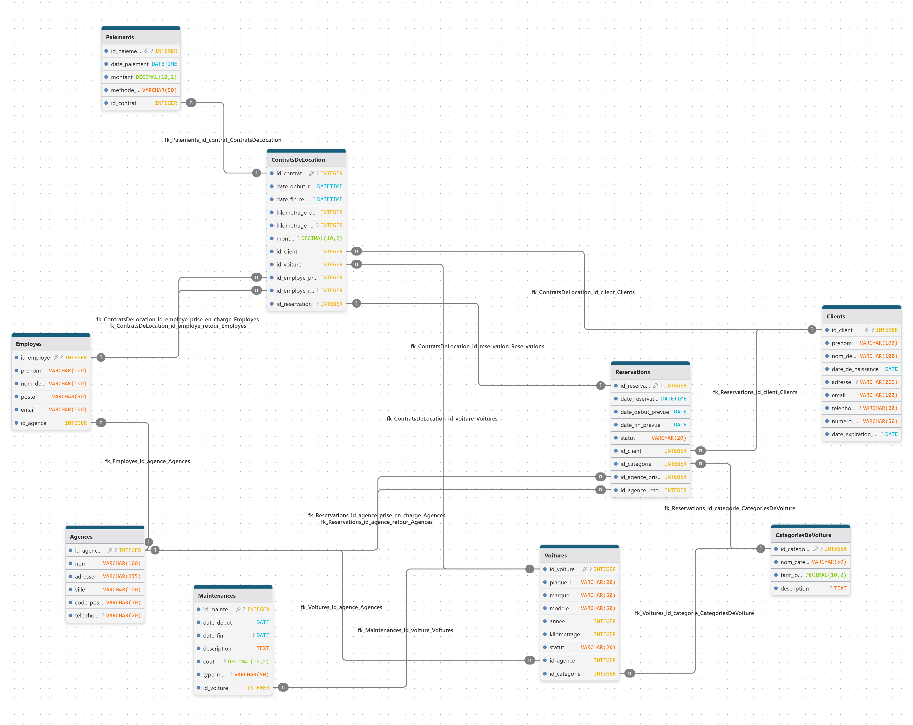

Compte Rendu : TP1-SOA2025
Auteur : Mouhamed Gharsallah
Classe : LSI3 - SOA
Introduction
Ce projet a pour objectif de concevoir et d'implémenter un système de gestion pour une agence de location de voitures. Pour cela, nous avons utilisé les technologies XML qui permettent de structurer, valider et manipuler des données de manière efficace et standardisée.
Partie 1: La Modélisation de la Base de Données
Avant de commencer à coder, la première étape a été de réfléchir à la structure de nos données. Nous avons créé un schéma pour visualiser les différentes "tables" d'informations et les liens qui existent entre elles.
Figure 1 : Schéma Entité-Association de la base de données.
Comme le montre le schéma, les entités principales sont Agence, Voiture, Client, et ContratDeLocation. Le diagramme nous aide à comprendre les relations logiques. Par exemple, une Agence peut avoir plusieurs Voitures, et un Client peut signer plusieurs ContratsDeLocation. La connexion entre ces tables se fait grâce aux clés étrangères, ce qui garantit que les données restent cohérentes.
Partie 2: Analyse des Fichiers Clés du Projet
Le projet est construit autour de trois fichiers principaux qui travaillent ensemble.
Le "Plan" des Données : schema_location_voiture.xsd
Ce fichier est le "règlement" ou le "plan" que toutes nos données doivent respecter. On y trouve des balises importantes comme <xs:element> pour définir nos balises, et <xs:key>/<xs:keyref> pour assurer les liens entre les données, comme des clés primaires et étrangères.
La "Base de Données" : systemeLocationVoiture.xml
Ce fichier contient toutes les données réelles de notre agence (clients, voitures, etc.). Chaque ligne respecte les règles du .xsd, ce qui rend nos données organisées et fiables.
Le "Programme" : Main.java
Le code Java est le moteur du projet. Il effectue deux tâches : d'abord, la Validation pour vérifier que le XML est correct, puis l'Interrogation avec XPath pour poser des questions aux données et en extraire des informations utiles.
Partie 3: Résultats de l'Exécution
L'exécution du programme se déroule en deux étapes principales. D'abord, la phase de validation. Le programme a utilisé notre schéma schema_location_voiture.xsd comme une "liste de contrôle" pour vérifier que le fichier systemeLocationVoiture.xml est parfaitement structuré. Comme le montre la première ligne de la sortie ("Validation réussie"), cette étape s'est terminée sans aucune erreur. C'est une étape essentielle, car elle nous donne la certitude que nos données sont propres et fiables avant même de commencer à les interroger.
Une fois cette vérification passée, le programme a pu exécuter en toute confiance les 7 requêtes XPath. Voici la sortie obtenue dans la console :

Figure 2 : Sortie du programme affichant les résultats des requêtes XPath.
Analyse des Résultats
Chaque résultat correspond à une question spécifique posée par une requête XPath :
- Requête 1 : On a demandé les noms des employés de l'agence de Sfax (
AG01). Le programme a bien trouvé "Mouhamed Gharsallah" et "Fatma Maaloul" dans le fichier XML. - Requête 2 : Une recherche simple pour trouver l'email d'un employé spécifique, qui a été retourné correctement.
- Requête 4 : Le programme a utilisé la fonction
sum()de XPath pour calculer le total des paiements pour le contratCON01et a trouvé 180.00 TND. - Requête 5 : Ici, on voit la puissance de XPath. La requête a trouvé le contrat
CON02, a récupéré l'ID du client (refClient), puis a utilisé cet ID pour rechercher les informations complètes du client dans une autre partie du document. - Requête 6 : La fonction
count()a été utilisée pour compter toutes les balises<voiture>ayant l'attributstatut="Disponible". Le résultat est 4. - Requête 7 : Le résultat "Aucun résultat trouvé" est aussi une réussite ! Cela montre que notre requête était très précise : elle cherchait une voiture qui était à la fois de catégorie "Économique" ET située à l'agence de "Tunis". Comme aucune voiture ne correspondait à ces deux critères, le programme n'a rien retourné, ce qui est le comportement correct.